Module 1 - Planning a genomic surveillance exploratory data analysis
Contents

Workshop 8 - Planning analysis and presenting results
Module 1 - Planning a genomic surveillance exploratory data analysis#
Theme: Analysis
This module will provide a walk-through guide to the necessary steps to plan and perform a genomic surveillance exploratory data analysis, and to distil the outputs into key findings.
To achieve this, we will revisit the analyses explored in previous workshops.
Learning objectives#
After completing this module, you will be able to:
Define exploratory analysis
Create an exploratory data analysis plan
Review analysis methods covered previously in the training course
Identify key findings
Lecture#
English#
Français#
Assumptions#
Before starting on the analysis, we make some assumptions:
You have data from a surveillance study which has collected mosquitoes from multiple locations or time points within a given study area (e.g., a country, province or region)
The mosquitoes were wild-caught and the sampling was relatively unbiased (i.e. mosquitoes collected were representative of natural populations)
Mosquitoes have been individually whole-genome sequenced (WGS)
Analysis-ready SNP, CNV and haplotype data are available, along with space-time metadata for each sample (where and when each sample was collected)
What is an exploratory data analysis?#
In general, most of the questions we will be interested in can be answered by comparing groups of mosquitoes, for example:
Comparing different mosquito species
Comparing mosquitoes from different geographical locations
Comparing mosquitoes from different time points
When comparing these groups, we:
Look for interesting patterns (differences or similarities within/between them)
Explore how those patterns relate to other variables (e.g., variations in climate, geography, ecosystem, land use, vector biology, vector control intervention coverage, malaria transmission, etc.)
So, for an exploratory data analysis, we want to:
Find interesting patterns in the genomic data
Relate those findings to other variables such as space, time and intervention coverage
Key findings#
As our analyses progress, we will collect multiple results. We want to assess which ones describe the data accurately, clearly and are interesting. We call these, key findings.
Key findings are observations which you think are scientifically or operationally interesting, and worth communicating to others. They can be:
Scientifically interesting = any new insight, i.e., something we didn’t know before
Operationally interesting = anything which might be relevant to our ability to control malaria
What are we hoping to describe in our key findings?#
New information related to mosquito population biology
identify previously unknown cryptic species
identify geographically isolated (or connected) populations
Identify new biological threats to malaria vector control
new genes or mutations with a potential roles in insecticide resistance
insecticide resistance mutations spreading between species or countries
We have described the assumptions for the data we will be using, and the key findings we are interested in when conducting an exploratory data analysis. Now, let’s explore how we will conduct the analysis.
Exploratory data analysis plan#
We have divided the analysis plan into 10 steps:
Background reading
Population sampling
Taxonomic population structure
Geographical population structure
Cohort choice
Genetic diversity
Insecticide resistance variant frequencies
Genome-wide selection scans
Adaptive gene flow
Review & refine key findings
We have covered all of these analyses previously, but not in the same order presented here, as we chose to teach some easier concepts first. The order here provides the steps in the natural order you would use to approach an analysis exercise.
Depending on the question(s) you are trying to answer you might focus more or less on certain sections described here.
In summary, you will:
Prepare for the analysis by finding out relevant background information.
Explore what mosquitoes have been sequences and how they are genetically related.
Decide how to group mosquitoes into cohorts for comparisons.
Analyse and compare the mosquito cohorts.
Synthesise and interpret the results.
0. Background reading#
The first step is to prepare for the exploratory data analysis, we can do this by:
Learning as much as possible about the study area:
Geography
Malaria epidemiology
Vector ecology and population biology
Learning about the study itself:
Sampling design
Data collection
How long you spend on this step depends on your familiarity with the study area, the depth and breadth of literature available, and on how/why the mosquitoes were collected in this study.
1. Population sampling#
For this section, we want to answer:
How many mosquitoes were sequenced in the study?
Where and when were they collected?
For which, we will:
Analyse the sample metadata and summarise using pivot tables, bar plots and interactive maps. See workshop 1, module 2 for examples.
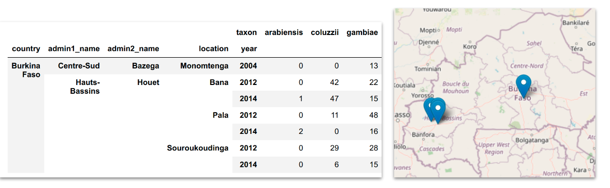
Here we can see examples of the plots we will use. We have: i) a pivot table where we have summarised taxa from different locations and timepoints and ii) an interactive map that allows us to see how the samples are disributed across the study area.
Additionally, you might also want to check for:
Any genomic data available from the same study area from other studies.
Any genomic data available from neighbouring countries. Depending on your question, it might be relevant to compare with these data and include it as part of the analyses conducted.
Then, you need to decide on your sample inclusion criteria (i.e., which samples are you going to include in your exploratory analysis?). In your analysis code, sample inclusion criteria can be specified via the sample_sets parameter or the sample_query parameter or a combination of both, you can use these to filter for the samples you want to keep on your analysis going forward.
2. Taxonomic population structure#
For this section, we want to answer:
What mosquito taxa (species) are represented?
Is there any evidence for previously unknown or putative cryptic taxa?
Is there any evidence for unusual levels of hybridisation between taxa?
Relevant analyses:
Ancestry informative marker (AIM) analysis#
Perform AIM analysis on all samples in the study, to create and inspect AIM heatmaps and AIM fraction scatter plots. See workshop 4, module 3.
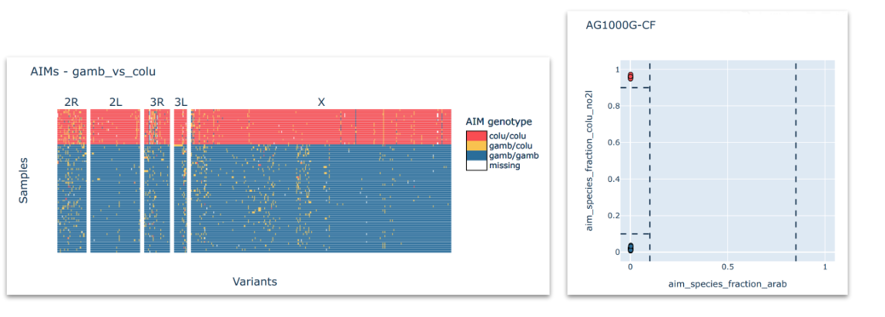
Here, you want to see which taxa are represented in your sample set. On the example above, we can see a clear-cut case where all the samples fall clearly into one of three expected taxa. However, this may not always be the case.
Principal components analysis (PCA)#
Perform PCA on all samples in the study. Create PCA scatter plots. See workshop 4, module 4.
Generally, we expect mosquitoes to cluster in the PCA according to established taxa (An. gambiae, An. coluzzii, An. arabiensis) but there are some difficult cases where this does not happen.
For unclear scenarios, it can be particularly useful to include samples from other studies in this analysis for comparison.
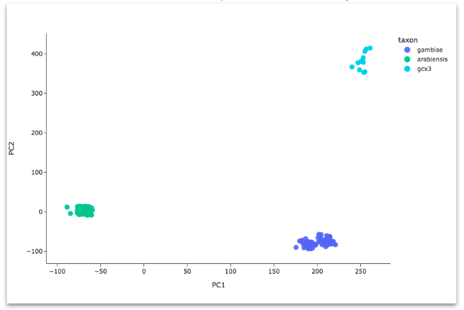
Because taxon assignment is very important but sometimes difficult, the MalariaGEN team regularly performs these analyses for all available samples as part of building each data release. Our taxon assignments are stored in the taxon column of the sample metadata but we still recommend you perform these analyses for yourself, to fully understand the taxonomic population structure in your study.
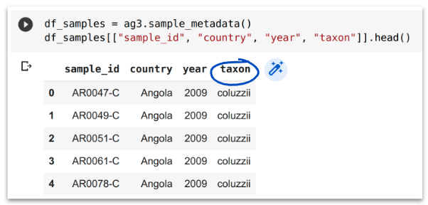
3. Geographical population structure#
For this section, we want to answer: Within each taxon, is there any evidence for geographical isolation, i.e., clustering of mosquitoes according to sampling location?
Perform a separate PCA for each taxon. Create PCA scatter plots and colour by geographical variables such as collection location, administrative division or latitude/longitude coordinates. See workshop 3, module 4.
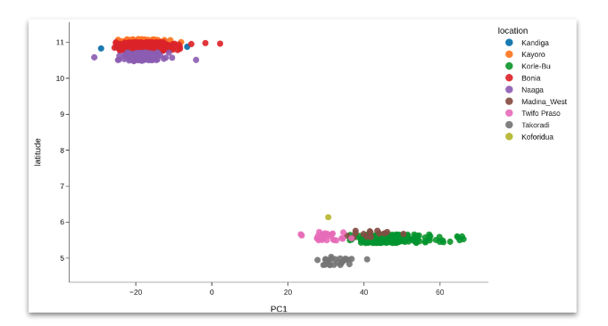
It is particularly useful to include samples from other studies in this analysis for comparison.
4. Select cohorts#
Now, we move into grouping the samples into biologically relevant cohorts.
A “cohort” is a group of mosquitoes sampled from a given geographical area, time and taxon. When deciding cohorts, we need to take into account:
How to group spatially
How to group temporally
Which taxa are present
Cohort size (i.e., number of samples in each cohort)
In general, aim for the finest possible grouping, whilst maintaining cohorts with at least 10 samples each. See workshop 5, module 3.
For convenience, MalariaGEN data releases include some useful columns in sample metadata for assigning mosquitoes to cohorts:
cohort_admin1_year= grouped by taxon, admin level 1 and yearcohort_admin1_quarter= grouped by taxon, admin level 1 and year quartercohort_admin1_month= grouped by taxon, admin level 1 and monthcohort_admin2_year= grouped by taxon, admin level 2 and yearcohort_admin2_quarter= grouped by taxon, admin level 2 and year quartercohort_admin2_month= grouped by taxon, admin level 2 and month
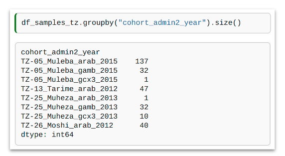
In this example, we have grouped our samples by cohort_admin2_year. You can see that 2 of the cohorts have a sample size smaller than 10, so these will not be used in further analyses.
Caveats#
Administrative divisions are often convenient for exploratory analysis but can be large and cover multiple sampling locations and different ecosystems
After selecting cohorts, we recommend going back and looking at results from the population structure analysis
Do any of the cohorts contain mosquitoes from separate PCA clusters? If so, this could be a problem, may need to group mosquitoes into cohorts differently
5. Genetic diversity#
For this section, we want to answer:
How genetically diverse are the mosquito populations represented by our selected cohorts?
Are there any notable similarities and differences in genetic diversity between cohorts?
Is there any evidence for recent inbreeding in any cohorts?
Relevant analyses:
Diversity summary statistics#
Compute and plot genetic diversity summary statistics for all cohorts. See workshop 5, module 3.
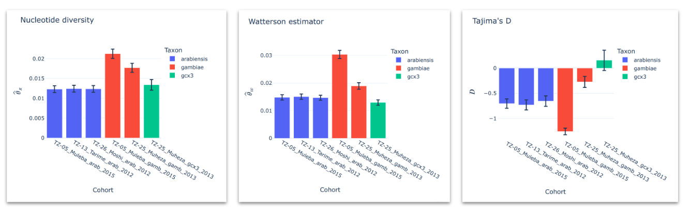
You can summarise these for each cohort using bar plots which will allow you to easily compare values.
Runs of homozygosity (ROH)#
Compute and plot runs of homozygosity for individual samples. See workshop 5, module 4.
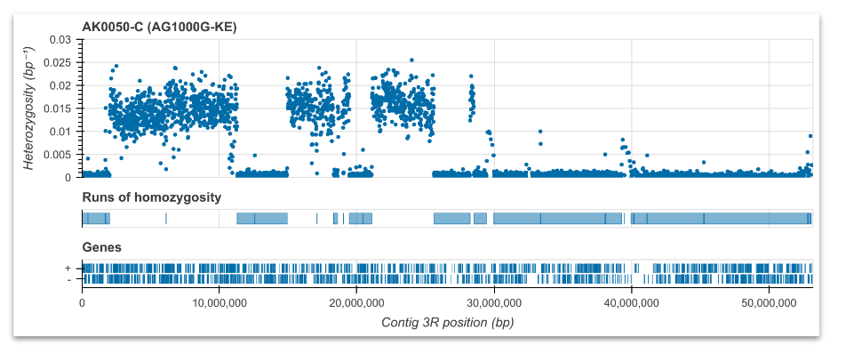
Here, we are looking for long runs of homozygosity which suggest there might be inbreeding. Note this analysis is run on each sample, so if you have many samples, you could choose a random selection for this step.
6. Insecticide resistance variant frequencies#
For this section, we want to answer:
What genetic variants (SNPs and CNVs) are present in known insecticide resistance genes?
How do these variant frequencies differ between cohorts?
Relevant analyses:
SNPs in the Vgsc gene (pyrethroid target-site resistance)#
Compute and plot frequencies of non-synonymous SNPs in the Vgsc gene. See workshop 1, module 4. 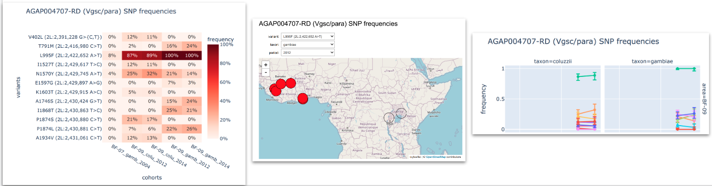
CNVs in Cyp and GSTe genes (metabolic resistance)#
Compute and plot frequencies of CNVs in metabolic gene clusters. See workshop 2, module 4. 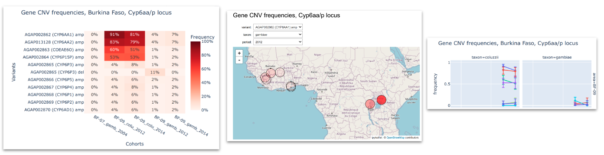
SNPs and CNVs in Ace1 (organophosphate resistance) / Gste genes#
Compute and plot frequencies of non-synonymous SNPs and CNVs in the Ace1 gene. See workshop 7, module 1.
To inspect the genetic variants we look at: i) heatmaps that allows us to compare the variants frequencies between different cohorts; ii) interactive maps that show how these frequencies are distributed georgraphically and iii) time series plots to see how frequencies change in time.
7. Genome-wide selection scans (GWSS)#
We want to answer:
What genome regions are under strong recent positive selection?
Are any selection signals at known insecticide resistance genes?
Do any selection signals suggest new candidate insecticide resistance genes?
How do selection scans compare between cohorts?
Relevant analyses:
H12#
Calibrate, compute and plot H12 for each cohort and chromosome arm. See workshop 6, module 3.
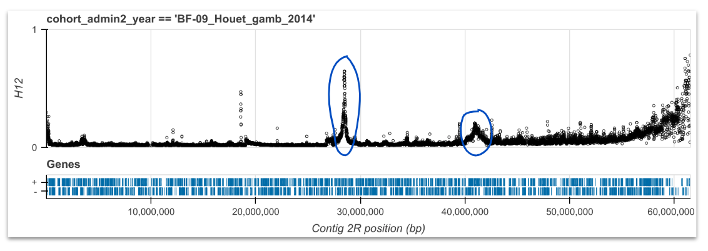
Here we are looking for outliers that form peaks which suggest recent positive selection. Then, we investigate the genes underneath the peaks, to see if we see any known resisteance genes or new regions that could be involved in resistance.
8. Adaptive gene flow#
We want to answer:
What genome regions are experiencing adaptive gene flow between taxa (introgression) or countries (spatial gene flow)?
Which cohorts are connected via adaptive gene flow events?
What can this tell us about how insecticide resistance may be spreading?
Relevant analyses:
H1X#
Compute and plot H1X for pairs of cohorts. See workshop 7, module 2. Identify peaks, investigate further with haplotype clustering and networks.
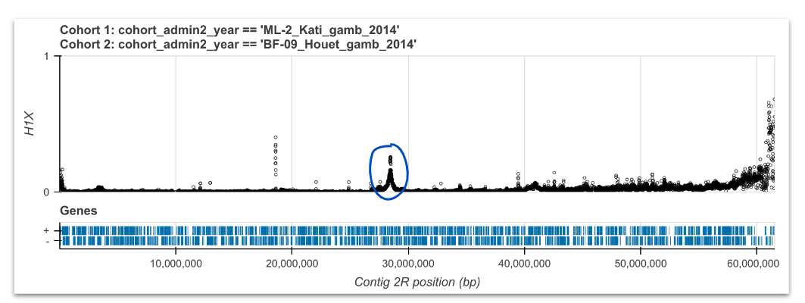
As we are choosing pairs of cohorts to use here, we could compare those where we saw the similar signals of selection in our H12 analyses. We are looking for peaks, which suggest the same signal of recent selection is shared across the two cohorts. We can further investigate these regions using haplotype clustering and networks.
Haplotype clustering#
Compute and plot haplotype clustering at selected genome regions where there is evidence of positive selection and adaptive gene flow. See workshop 7, module 3. 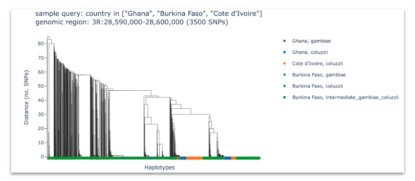
Here, we are looking at clusters of similar haplotypes shared between different countries or species, which would suggest an adaptive gene flow event.
Haplotype networks#
Compute and plot haplotype networks at selected genome regions where there is evidence of positive selection and adaptive gene flow. See workshop 7, module 4.
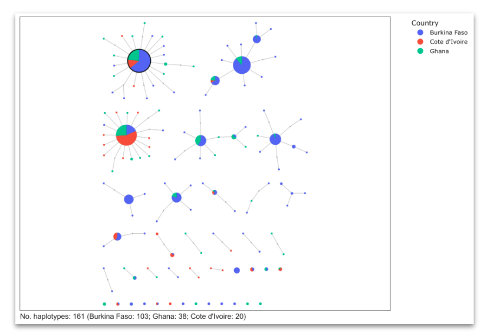
Similarly to the clustering analysis, we want to identify nodes that are shared between different countries or species, which would provide evidence for an adaptive gene flow event.
9. Review and refine key findings#
After you have finished all of the analyses above, you will find yourself with a lot of information and plots. In this step, you want to distill them, note the most relevant ones and identify key findings.
Key findings are observations which you think are scientifically or operationally interesting, and worth communicating.
After reviewing all your exploratory analysis, try to write down your key findings as a short list of bullet points in plain language. For example:
I found that within An. gambiae, mosquitoes in the west of the country were genetically distinct from mosquitoes in the east. This is interesting because the central part of the country is much more arid, and so could be preventing An. gambiae mosquitoes from moving freely across the country.
I found a new mutation in the gene targeted by pyrethroid insecticides, which was increasing in frequency in An. coluzzii mosquitoes from the north of the country. This is interesting because it could represent a stronger form of resistance to pyrethroid insecticides.
Now, with these clear key findings, you can reflect on:
Any common themes or threads connect your key findings?
Any interesting connections between your key findings and other data or previous surveillance or research in your study area?
Starting to join your key findings up into a story
Talking your key findings through with a friend or colleague
Which plots or results from your exploratory analysis best help to communicate your key findings?
Well done!#
In this module we have learnt how to:
Plan and conduct a genomic surveillance exploratory data analysis
Distil the outputs into key findings
Practical exercises#
English#
Now, you can run your own exploratory data analysis. For this:
Choose a country or set of neighbourhing countries to focus on.
Run all the analyses we explored in the order they have been outlined in the exploratory data analysis plan.
Identify a maximum of 10 key findings.
Remember:
You can use your own data to perform the exercises on (check assumptions above if these data is not part of the MalariaGEN vector observatory).
You can use data from other studies in the MalariaGEN vector observatory data to conduct your exploratory data analysis on. These data are open-access but subject to a publication embargo. This means that you will need to obtain permission before publicly communicating any findings.
Français#
Vous pouvez exécuter votre analyse de données exploratoire tout suite. Il faut:
Choisissez-vous un pays, ou un ensemble de pays voisins, sur lequel vous concentrer.
Exécutez-vous toutes les analyses que nous avons explorées, en l’ordre que elles ont été décrites dans le plan d’analyse exploratoire.
Identifiez-vous un maximum de 10 résultats importants.
Se souvenir:
Vous pouvez utiliser vos propres données pour effectuer les exercices (vérifiez les hypothèses ci-dessus si ces données ne font pas partie de l’observatoire des vecteurs MalariaGEN).
Vous pouvez utiliser les données d’autres études dans l’observatoire des vecteurs MalariaGEN pour effectuer votre analyse exploratoire. Ces données sont << accès libre >> mais sont aussi restictif par l’embargo de publication. Par conséquence, vous devrez obtenir une autorisation avant de communiquer publiquement toute découverte.